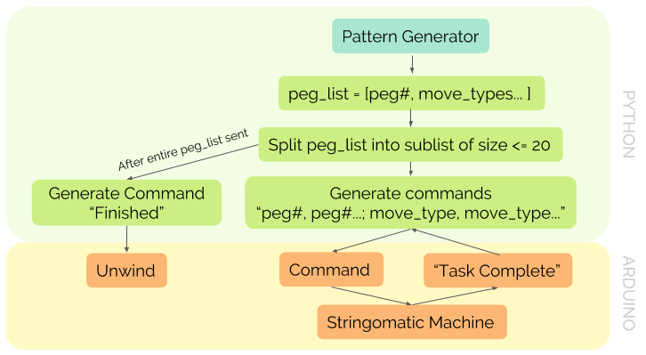
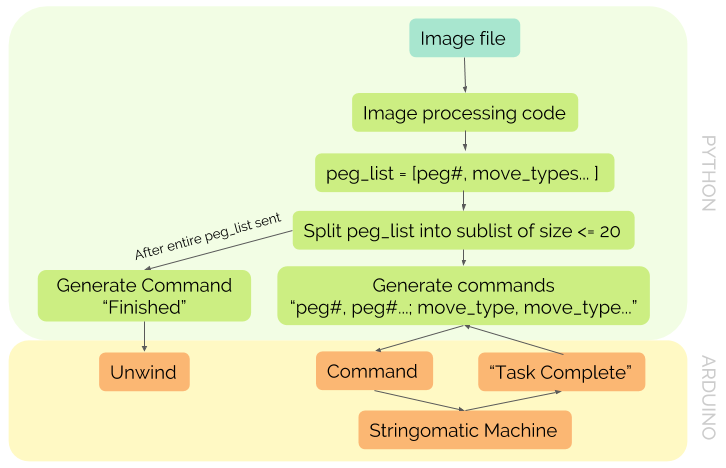

The Stringomatic is a CNC string art machine that consists of significant software, electrical, and mechanical components. The diagrams below describe how the components are connected to each other. They also display two different workflows of how the Stringomatic operates.


The mechanical, electrical, and software pages provide more details on how each component works independently. The difference between the two diagrams is that one workflow generates the peg_list using a geometrical pattern while the other workflow generates the peg_list from an inputted image.